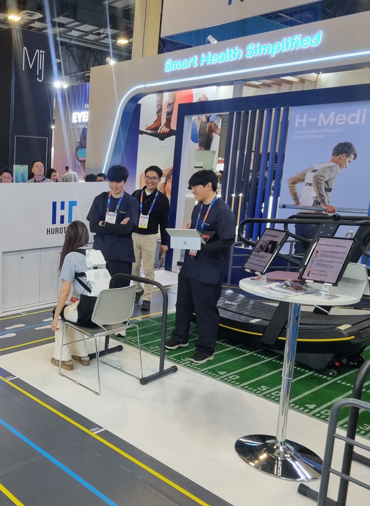

SELECTED PROJECT · CES 2025
H-MEDI Wearable Robot at CES 2025

From algorithm to live demonstration
Motion-aware assistance for a rehabilitation-assist wearable robot, from high-level control development and integration to live demonstrations at CES 2025.
My contributions
- Developed and integrated motion-state recognition and target assistance-force generation for walking, stopping, and transitions between sitting and standing.
- Operated live demonstrations, responded to unexpected on-site situations, and managed the robot and batteries between demonstrations.
The high-level controller recognized motion-state changes and generated target assistance forces appropriate to the current activity.
Demonstrations
On-site footage of sitting, standing, and walking with the H-MEDI wearable robot.